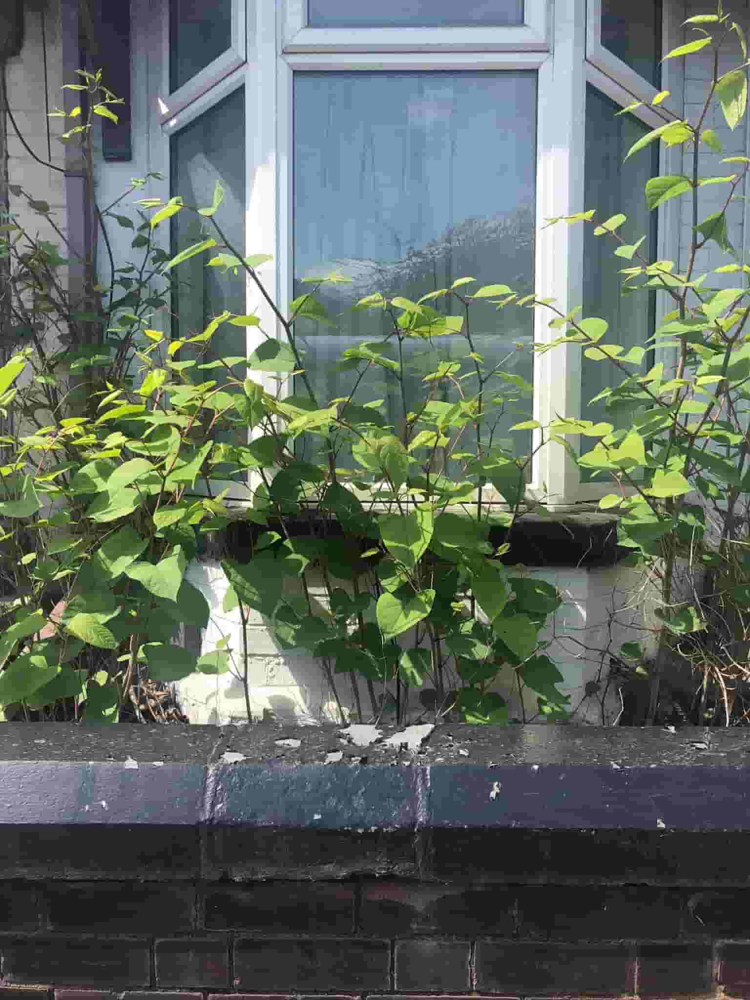
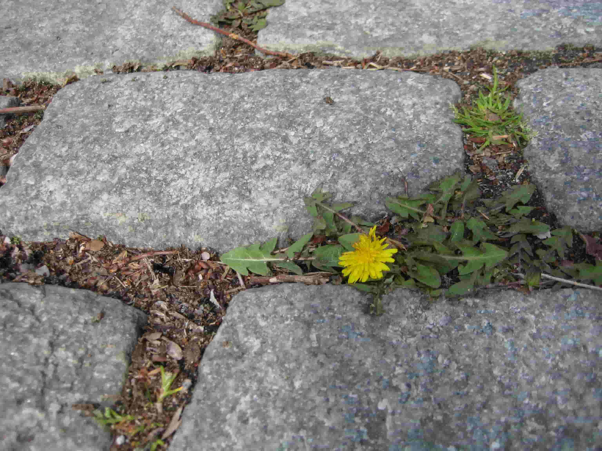
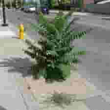
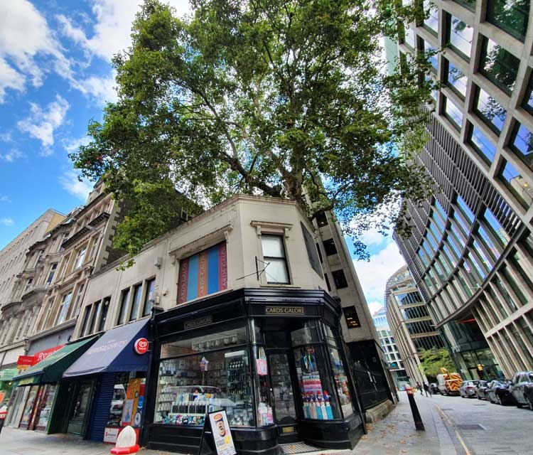
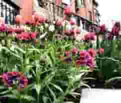
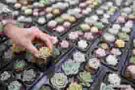

Green Warriors of the Concrete Jungle
10 Urban Flora Superstars
Flora in urban environments often display remarkable adaptation to the challenges of city life. These 10 representative cases of urban flora showcase the remarkable adaptability of plant species to the challenges of city life. Their ability to grow in confined spaces, tolerate urban pollutants, and even enhance the aesthetic and ecological qualities of urban areas demonstrates the resilience of urban wildlife in the face of urbanization and environmental stressors.
Sidewalk Grasses (Various species)
 Adaptation: Grow in sidewalk cracks and tolerate foot traffic, compacted soil, and limited access to water.
Adaptation: Grow in sidewalk cracks and tolerate foot traffic, compacted soil, and limited access to water.
Japanese Knotweed (Fallopia japonica)  Adaptation: Thrives in disturbed soils, concrete gaps, and tolerates pollution and herbicides.
Dandelions (Taraxacum officinale)  Adaptation: Flourish in urban lawns and vacant lots, often growing between pavement cracks.
Creeping Jenny (Lysimachia nummularia)
 Adaptation: Spreads rapidly in moist urban areas, forming ground cover near water features.
Adaptation: Spreads rapidly in moist urban areas, forming ground cover near water features.
Ailanthus Tree (Ailanthus altissima)  Adaptation: Tolerates pollution and thrives in vacant lots, urban waste areas, and along roadsides.
Wall Ivy (Hedera helix)
 Adaptation: Grows on vertical surfaces, including building facades and walls.
Adaptation: Grows on vertical surfaces, including building facades and walls.
Plane Tree (Platanus × acerifolia)  Adaptation: Thrives in urban environments with pollution tolerance, providing shade and improving air quality.
Bird of Paradise (Strelitzia reginae)
 Adaptation: Popular ornamental plant in urban landscapes, often used in landscaping and gardening.
Adaptation: Popular ornamental plant in urban landscapes, often used in landscaping and gardening.
Lungwort (Pulmonaria spp.)  Adaptation: Shade-tolerant perennial often used in urban gardens and green spaces.
Succulents (Various species)  Adaptation: Low water requirements make succulents popular choices for urban gardening and landscaping, especially in drought-prone areas.